These are the trials and tribulations of making my little robot cart RoboPi.
I want to take part in the PiWars challenges and challenges indeed they are.
The team
The robopi team consists of two robot enthusiasts, Kees and Rob. Both are members of the 'HCC robotica' hobby club, which is Dutch for the robotics group. There is a monthly gathering of this robotics group right in the centre of the Netherlands in the city of Amersfoort of people fascinated with building their own robots. This a nice time to meet others and exchange stories and the current challenges that we always face when there is something to do with robotics. Never a dull moment.
Choices, choices, choices
So well what is this cart going to look like? It depends on what it should be able to do. So reading the website of PiWars was the place to start. After reading and pondering it looks like that speed is important and image recognition. We want to see different kinds of colored objects like barrels, zombies, and colored locations. So a camera is needed. Since we also want to turn corners and follow lines, we need to be able to steer the robot. Also, it would be nice if we can detect walls. We also need to be able to navigate a route without the help of a line. Finding out the distance to a wall would also be very handy to prevent the robot from bumping into it. Maybe even our little robot should be able to grab a barrel and even fire a little cannon. So the option to add some components for a specific challenge is the way to go. With all this, we have the hardware, mechanics, electronics, and software to consider.
It would be nice if we can use a lot of open source and available stuff.
The base
Our little robot has to carry batteries, a camera, some computer, and other stuff. So it should not be too little but also not too large, just right. The base that seems to fit the bill is this thing.
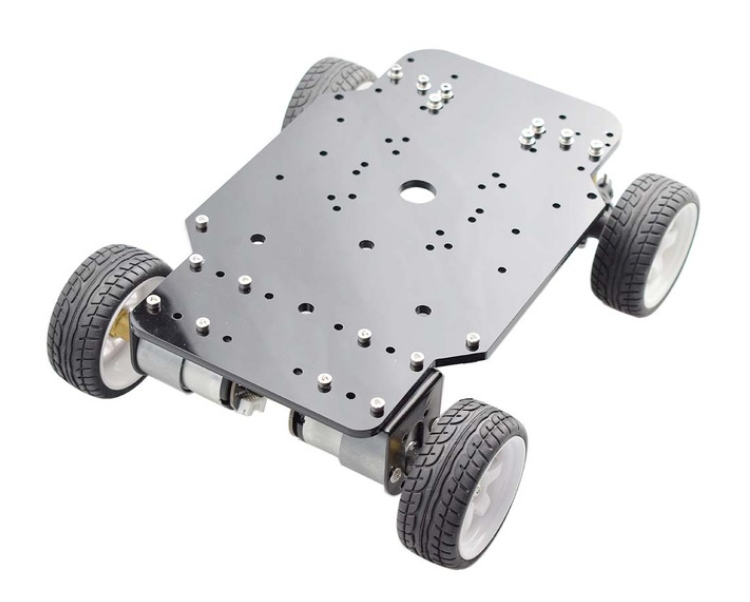Dust is the enemy
The encoders of the motors have no protection and are very close to the ground. In order to protect them against the dust and dirt of the disaster world, we need to protect them.
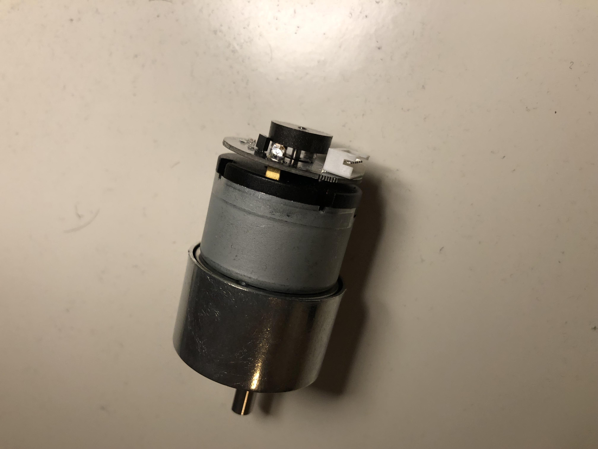
This is much better
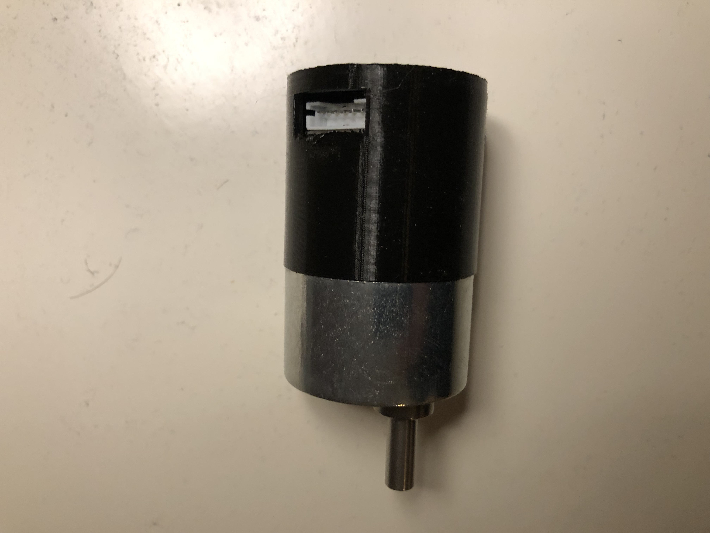Attaching the main parts
First things to do is to attach parts to the base of the robot like the battery holder, some pcb to experiment on, add an arduino uno with motor speed controll and so on.
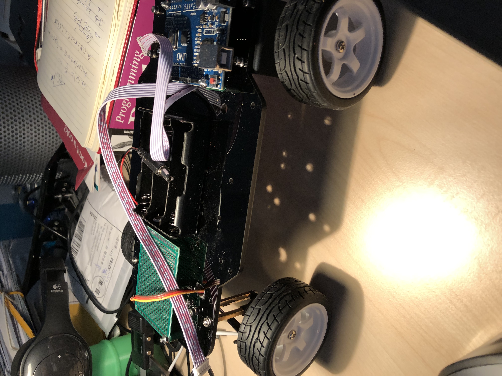Lets add the rpi4 and camera with a frame
The raspberry pi 4 will go to the front of the robot. I made a 3d design for it and also a place for the camera
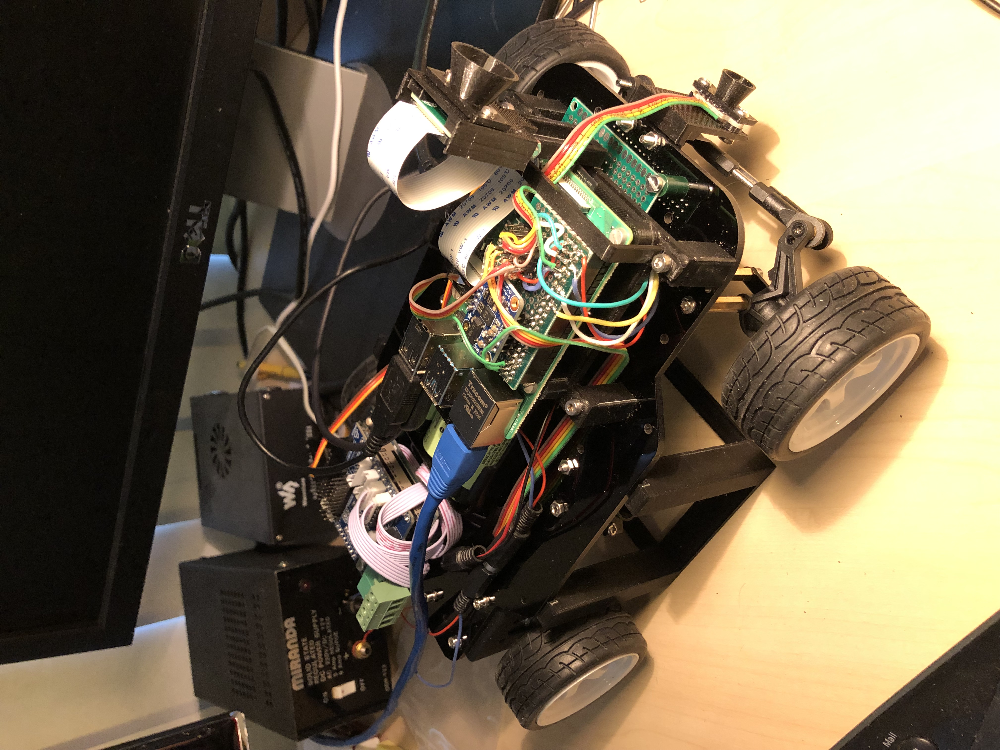The time of flight sensors are at the front and two on the side. In the past I found that these sensors can be troubled by ir light so I added a sun protection cone to each one of them.
Yikes, spikes!
The RoboPi robot has an orientation sensor onboard, the chip BNO055. A great chip but now something weird was happening. When rotating the robot at random times, huge spikes appeared in the z-angle that we are interested in. After much pondering and trying another driver, still no luck. So time for plan B. By using a median filter, we can filter out these random spikes, and now the trace of the orientation shows a smooth curve for the z-angle. Happy days, on to the next challenge.
Wireless access to my robopi robot
A very nice luxury is the abality to access the desktop of the raspberry pi 4 of the robot from my laptop using wifi. After some fidling and reading internet pages about this, the robopi robot now is a wifi access point that I can use from my laptop. Happy days.
We need a cannon !
To beat those pescy zombies we need a cannon ! Luckely there was a great design on thingiverse.com of Markus Purtz that I could adjust. Now the canon is starting to look like one.
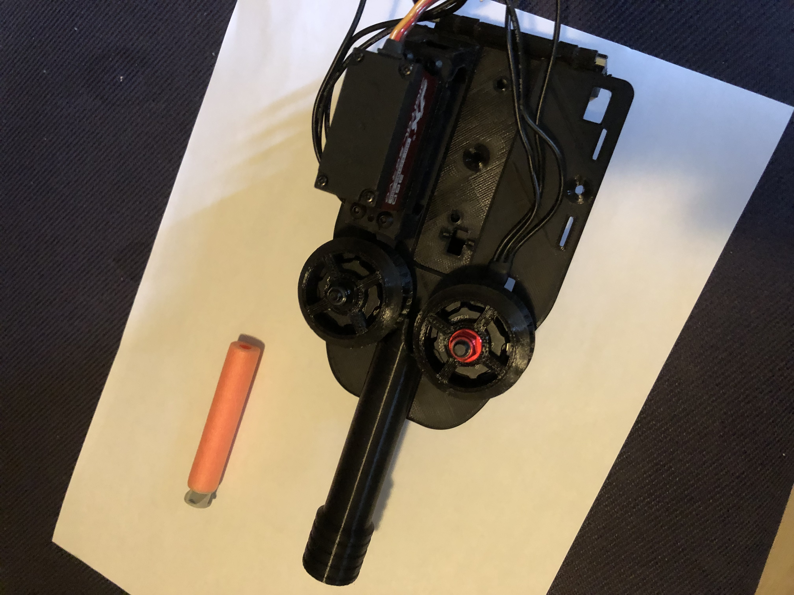Two brushless motors will drive the nerf dart to the zombie. A servo pushes the dart from a cartridge to the barrel and there is another to tilt the canon so we can aim for zombies higher up.
That cannon needs a base (first try)
The big canon needs a sturdy base on the robot to stand on. The first attempt from my 3d printed design turned out not quite right...

So back to the drawing board with a more modular design of the base that can be printed in several parts and then assembled using bolts.
That cannon needs a better base (second try)
Measurements of the holes for the base were wrong (duh). Measured again, twice, now should be good.
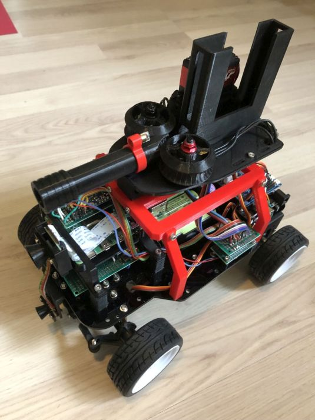Now in red and even seems to fit on the chassis, life is good. Changed the way the poles are attached to the main frame with a bolt and screw attach.
Smoke signals are not ok
If your hardware gives out smoke signals, that is not good :-). Looks like the motor driver is gone because of a software error with PWM I was not anticipating. A well, luckly there are two motor drivers on the bord, need to fire up my soldering iron to fix this. Turns out that did not work because also the second motor driver got toasted somehow. I found a electronic speed controller I can use and added that to the robot. The disadvantage is that now I can only control the speed of the two motors by one controller. So no differential speed is possible but the steering front should be enough I expect.
A laser pointer on the barrel
To find out where the cannon is pointing to I added a small laser pointer diode. It is controlled by the Arduino uno and so controllable by software. Made a small bracket that clamps to the barrel. Probably needs some super glue but it is ok for now.
Balloons, balloons ...
At pi-noon all robots gather around to burst balloons. To practice this art it would be nice if our robot could have a platform to attach the balloons to. Some looking around on the piwars website revealed a svg file with the current design using a laser cutter. Unfortunately I do not have this nice apparatus but I do have a 3D printer. Some designing in freecad later led to this contraption.
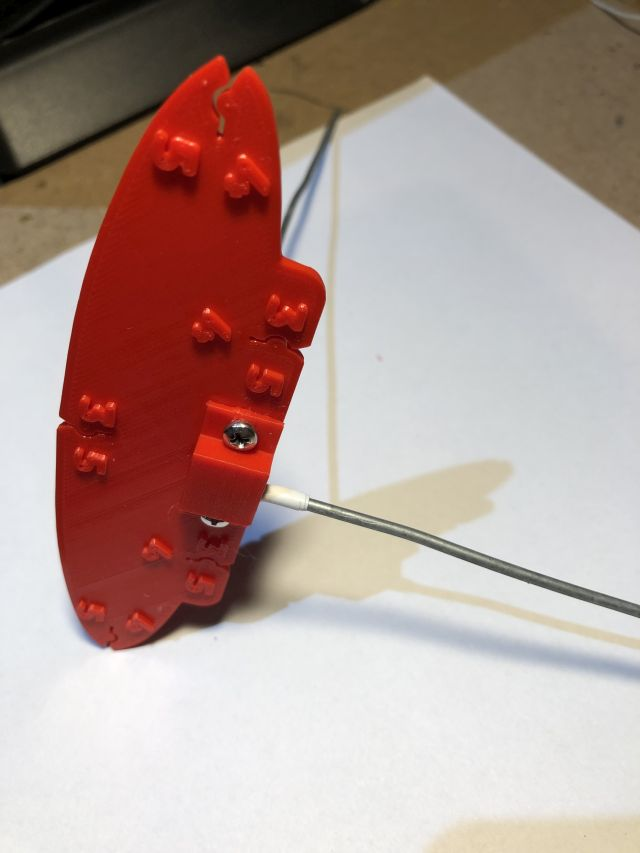The design is free to use for all at piwars balloon platform .
Driving like an egyptian
To start our little robot moving in some sort of controllable way the first task is to make sure it can drive in a straight line. Since the motors of the robot are not exactly equal there will be some tendency to drive to the left or right. To fix this we can use the gyroscope implemented by the bno055 chip on the robot. This thing knows the angle it is at and if we make sure that we use the steering correctly we can strive to stay on a specific angle. If the chip says we are to the left then the steering needs to go to the right and the other way around as well. Let the experiments begin to see if this theory conforms to the reality.
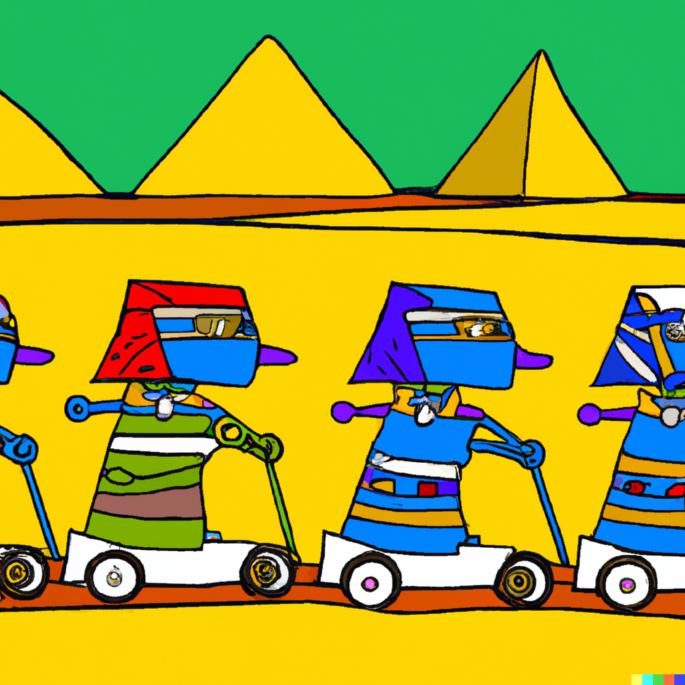This is challenging, we also need to take into account that if driving backwards the angles need to reverse. Also setting the north position is non trivial. The gyroscope is set to its initial 'north' at powerup. What we need to do is set a new 'north' if the robopi robot is on the floor and at the start of the track. In the end this comes down to doing some trigonometry with substracting one angle being the gyroscope 'north' from the angle of the 'north' required on the track. Now we need to test, test and test again.
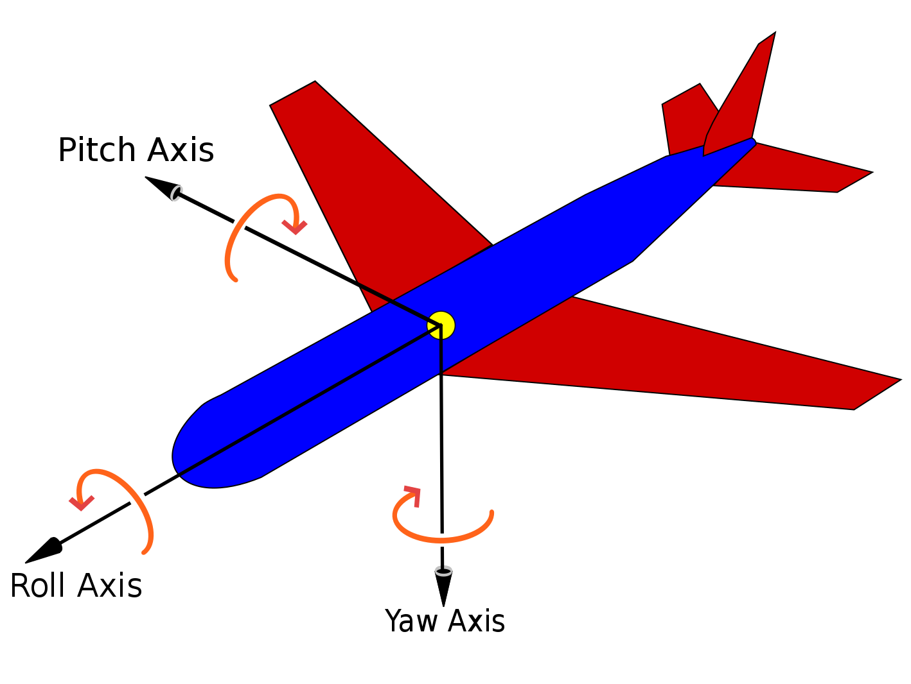Attaching stuff
At the front of our little robot we need to be able to attach stuff. Stuff like the jousting pin to burst balloons or a grabber arm that can grab a barrel in the field. In order to allow for some sturdy but flexible attachment, Kees designed a nice holder in a wood prototype.
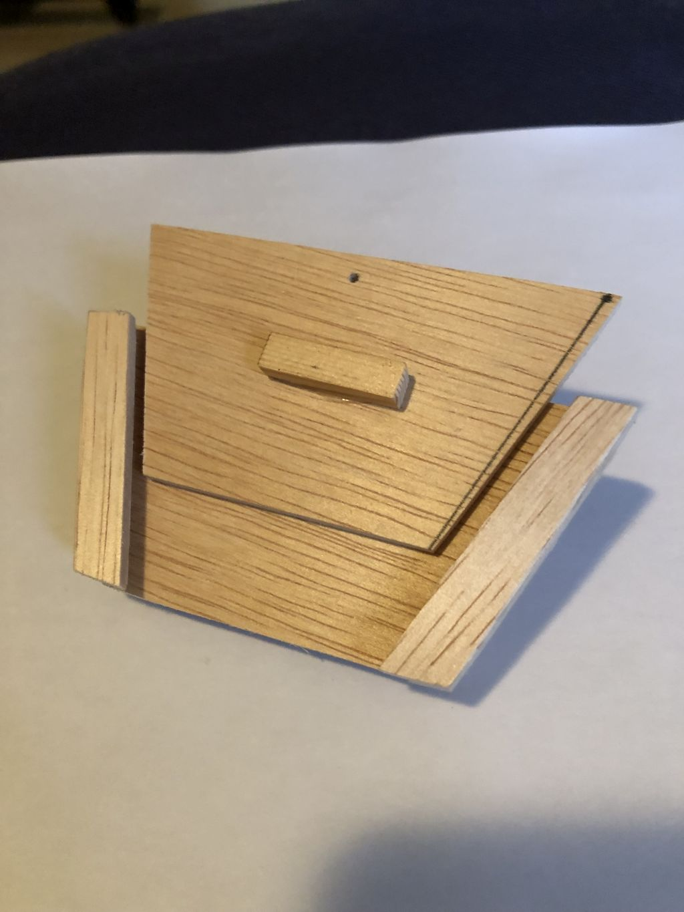Then came the first 3D version. You always need at least two version to get it right. This time the first version did not print very easyly. The supports would not come off so I designed a second version that dit not need supports.
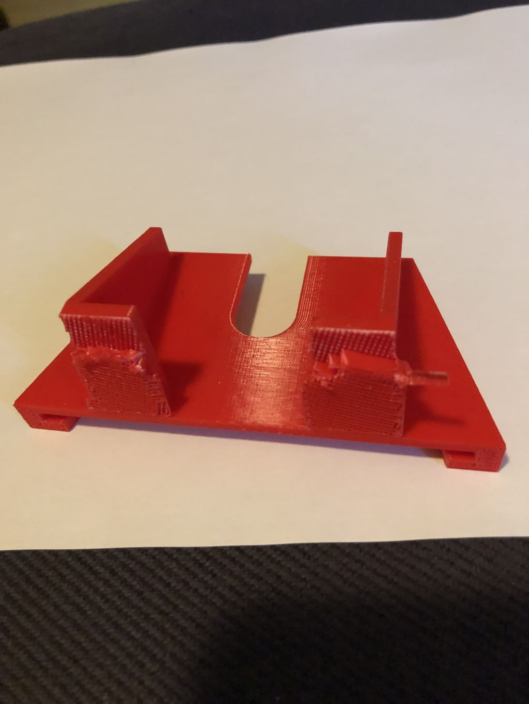 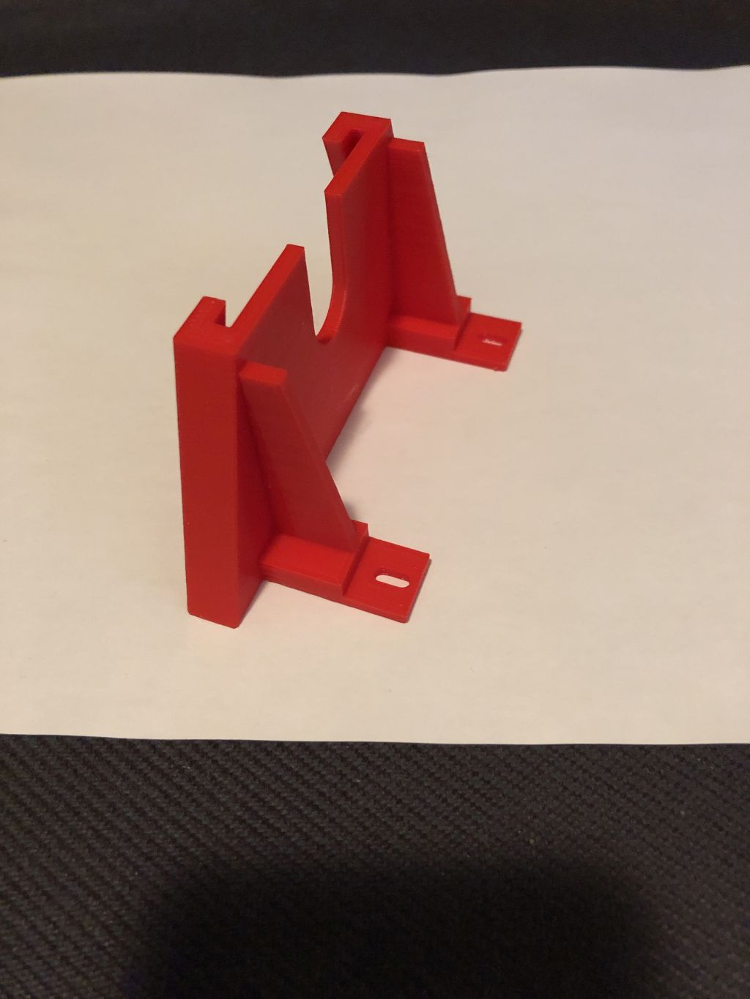
This resulted in the final version that got mounted to our little robot like this.
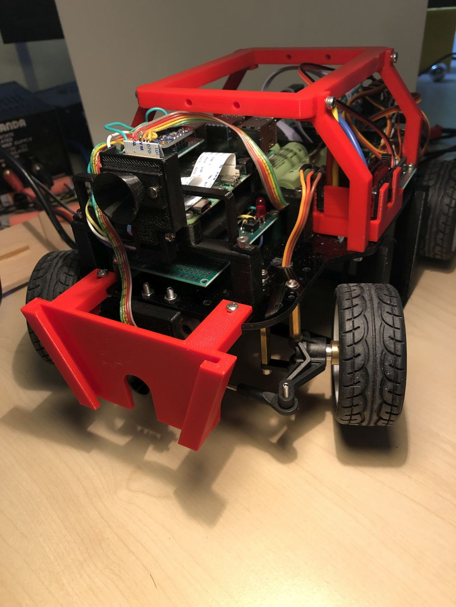This attachement also gives a bit of tough image to our robo, cool stuff.
Power glitches are not nice
Strange things were happening during testing. At random times the Arduino Uno that controls the servos suddenly stopped its program and halted. After a lot of scratching of the sparsely populated head, I started some measurements on the power voltage of the Arduino Uno. Turns out at some points when the steering servo was turning glitches on the power voltage dropped nearly 0.8 volts. Not good ! What I then did was to add an additional dc to dc converter that just feeds the steering servo. After some more testing that solved the issue. Happy days.
Testing Time of Flight with black paint
Since some knowledgable people a the Dutch robotics club voiced their opinion that a time of flight sensor would not work on a black surface, I got worried. I made a small prototype painted black board of wood painted with mat black spray paint and tried the time of flight sensor on it.
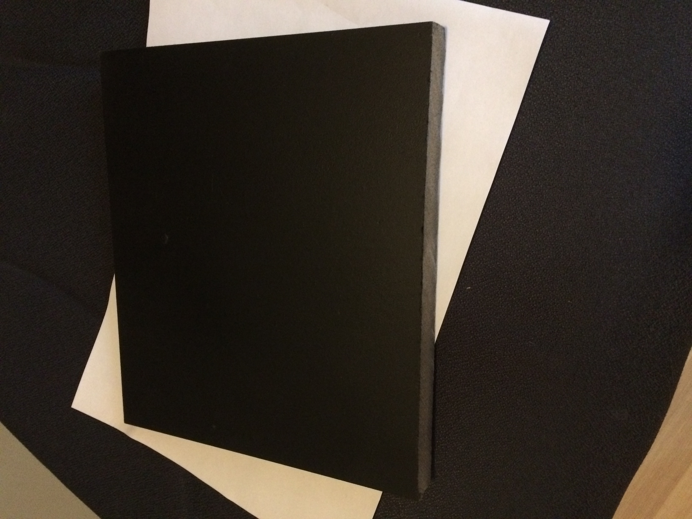The nice test result is that the tof sensor worked as well on this black surface as on the white test boards I had been using. So 'no worries' as they would say in Australia.
V1.0 (c) Rob vd Ouderaa (rouderaa@hccnet.nl)